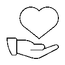
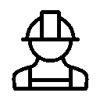

Who we are
Our donation team is dedicated to making a meaningful impact in the lives of those in need. At the heart of our mission is the act of donating essential items to individuals and families who are facing hardships. Our operations are based on a well-organized system that ensures efficient and effective distribution of resources. We maintain a well-stocked base with a variety of products, ranging from food and clothing to hygiene items and household necessities. This base acts as the central hub for all donations, ensuring that we have a ready supply of essential goods to meet the immediate needs of our community. Generosity from the public plays a crucial role in our mission. People from various walks of life contribute by offering items they no longer need or by purchasing and donating new products. This continuous influx of donations keeps our base well-equipped and ready to respond to emergencies and ongoing needs.
.png)
.png)
Get Help
 Receiving help can be a transformative experience, providing much-needed support during challenging times. Whether it's through a kind gesture from a friend, guidance from a mentor, or assistance from a community service, help can significantly lighten one's burdens and offer a renewed sense of hope. It reminds us that we are not alone and that there is a network of care and solidarity around us. Embracing help fosters resilience and encourages us to extend the same kindness to others, creating a ripple effect of compassion and understanding in our communities.
Volunteer
 Becoming a volunteer to help with the transportation of donated items is a rewarding way to contribute to your community. Start by reaching out to local charities, shelters, food banks, and community organizations to inquire about their volunteer needs. Many of these organizations rely on volunteers to collect, sort, and deliver donated goods to various locations. Once you sign up, you may be tasked with picking up donations from collection points or directly from donors and transporting them to distribution centers or to individuals and families in need. This role often requires a reliable vehicle and a willingness to dedicate time and effort. By volunteering in this capacity, you play a crucial role in ensuring that essential items like clothing, food, and hygiene products reach those who need them, ultimately making a significant and tangible difference in their lives.
Donator
 Becoming a donor is a straightforward and impactful way to help those in need. Start by identifying reputable local charities, shelters,
food banks, and community organizations that accept donations. Reach out to these organizations to learn about their specific needs,
which can range from clothing and non-perishable food items to hygiene products and school supplies. Once you have gathered the items
you wish to donate, you can drop them off at designated collection points or arrange for a pick-up if the organization offers such
services. Many charities also accept financial donations, which allow them to purchase necessary items and support their operations.
Additionally, consider organizing donation drives within your community or workplace to maximize your impact. Remember, every contribution,
no matter how small, can make a significant difference in someone's life.
By donating, you not only provide essential support but also spread kindness and compassion within your community.
Becoming a donor is a straightforward and impactful way to help those in need. Start by identifying reputable local charities, shelters,
food banks, and community organizations that accept donations. Reach out to these organizations to learn about their specific needs,
which can range from clothing and non-perishable food items to hygiene products and school supplies. Once you have gathered the items
you wish to donate, you can drop them off at designated collection points or arrange for a pick-up if the organization offers such
services. Many charities also accept financial donations, which allow them to purchase necessary items and support their operations.
Additionally, consider organizing donation drives within your community or workplace to maximize your impact. Remember, every contribution,
no matter how small, can make a significant difference in someone's life.
By donating, you not only provide essential support but also spread kindness and compassion within your community.